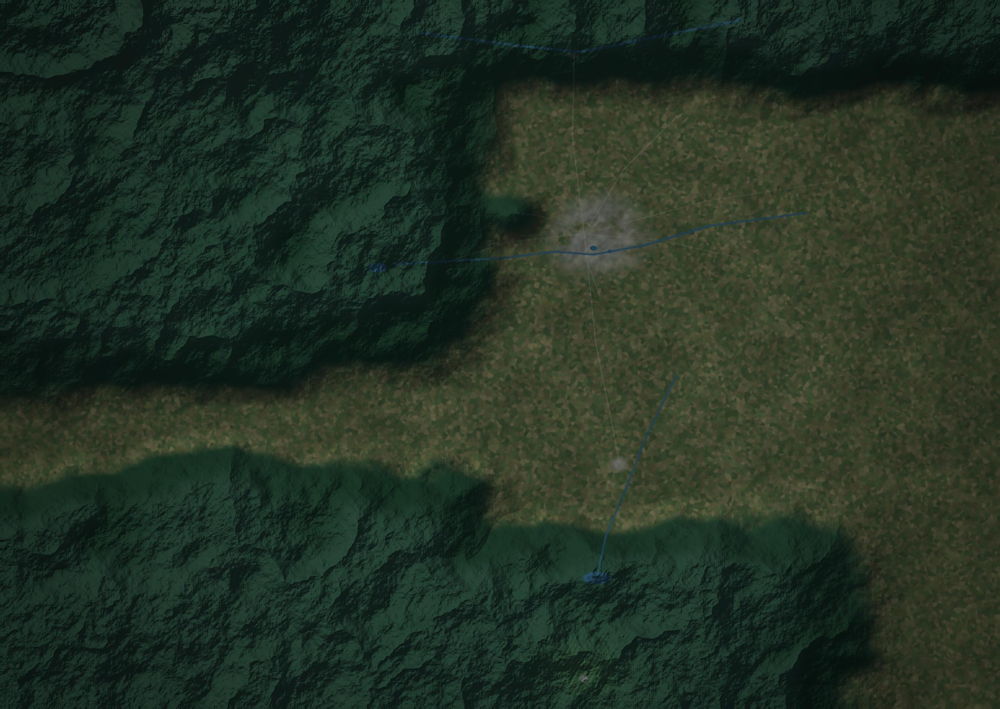
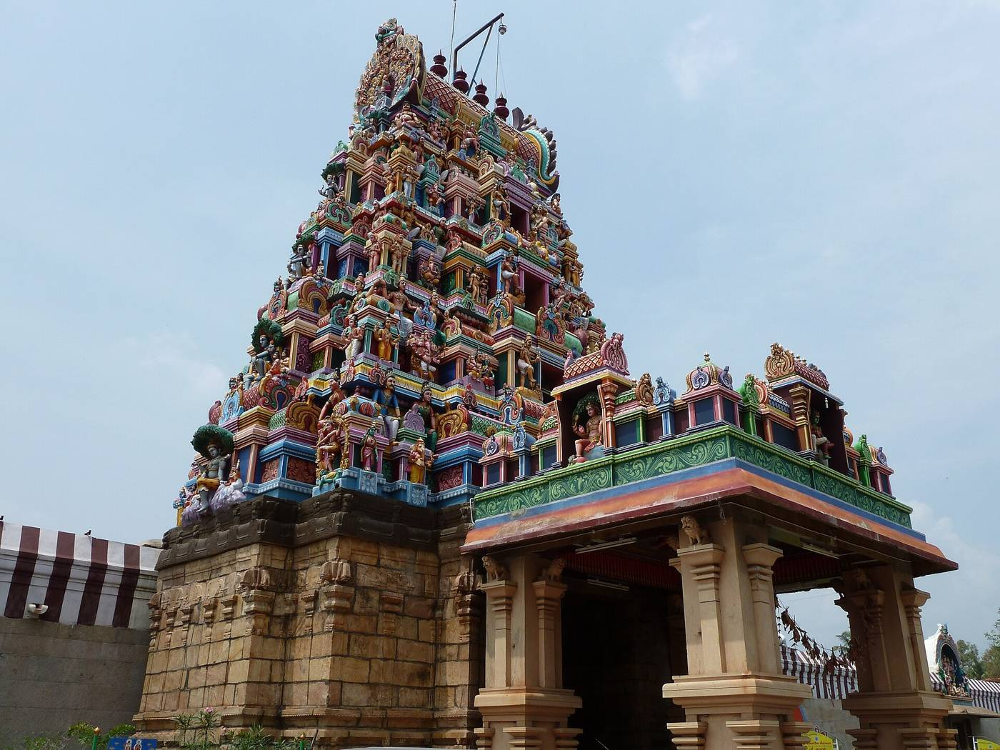
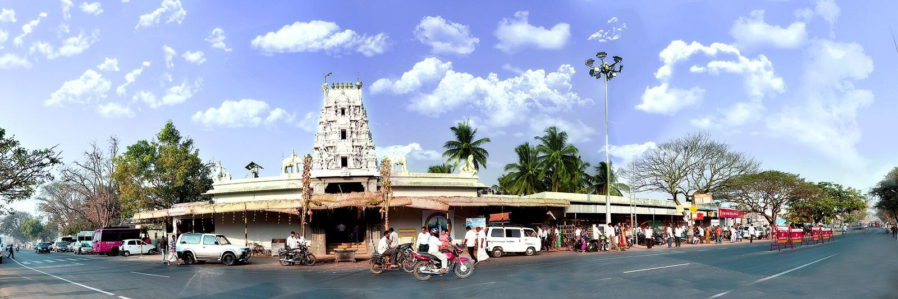
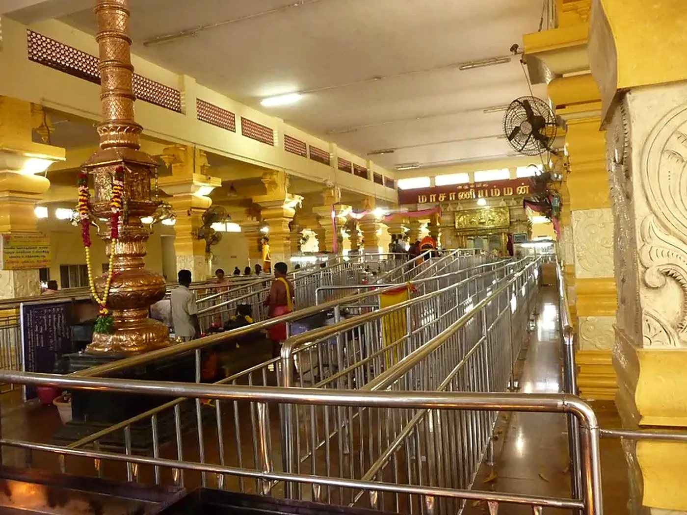
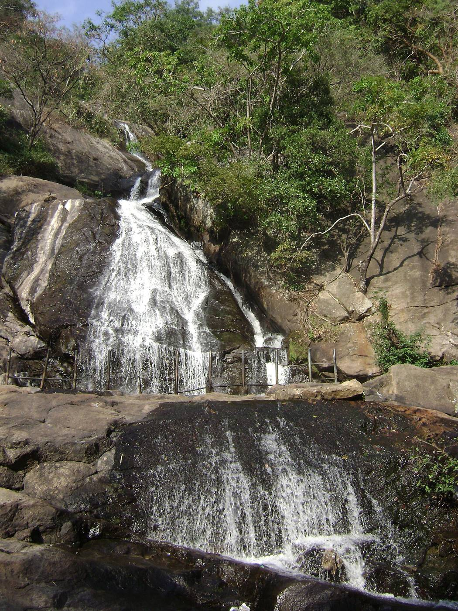
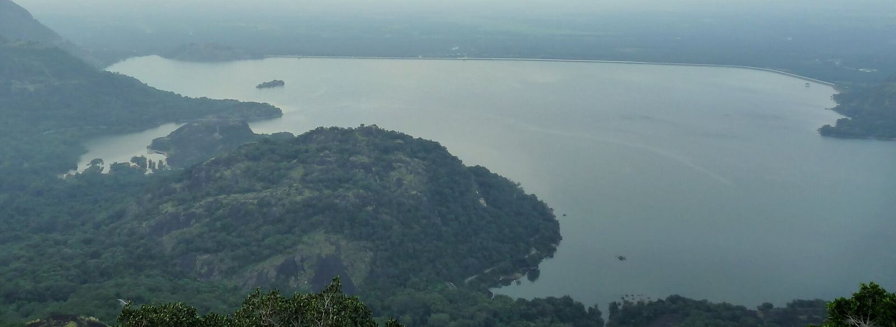
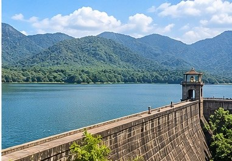

Presenting
KOVAI UNCOVERED
Temples, hills, waterfalls, malls and family days out: twenty-one places across Coimbatore district, on one map.
Explore the mapFind your way around Kovai
Tap a pin to see the place. Filter by the kind of trip you want.

The place guide
History, what to see, timings and how to get there for all 21 places. Facts come from the sources under each entry; timings change, so check before you go.
Temples 5

Isha sivan temple
Isha Yoga Centre & Adiyogi
The Isha Yoga Centre sits at the foothills of the Velliangiri mountains, about 40 km from Coimbatore. Its landmark is Adiyogi, a 34 m (112 ft) steel bust of Shiva unveiled on Maha Shivaratri, 24 February 2017. Guinness World Records lists it as the largest bust sculpture.
- The statue
- About 500 tonnes, built from 20,000 iron plates. The Yogeshwar Linga stands at its base.
- Evenings
- Adiyogi Divya Darshanam, a 14-minute 3D laser show projected onto the statue (since 2019).
- Getting there
- About 40 km west of the city by road.
- Before you go
- Check visiting hours and dress guidance on Isha's official website.
Sources: Wikipedia: Adiyogi Shiva statue · Wikipedia: Isha Foundation

Maruthamalai Temple
Hill temple of Lord Murugan
About 15 km north-west of the city, this hill temple is often called Murugan's seventh abode and is around 1,200 years old. The saint-poet Arunagirinathar sang of it in the Thiruppugal.
- Getting up
- A 3 km ghat road, with mini-buses from the foothills, or about 837 steps. There are lifts for those who need them.
- Next door
- A cave shrine of the Pambatti Siddhar.
- Festivals
- Thaipusam, Panguni Uthiram and Karthigai Deepam. Traffic is regulated on festival days.
- The name
- Marudham (the Arjuna tree) + malai (hill).
Sources: Wikipedia: Marudhamalai

Perur Patteeswarar Temple
Ancient Shiva temple on the Noyyal
One of Coimbatore's oldest temples, on the bank of the Noyyal. Tradition credits the Chola king Karikala with building it in the 2nd century CE, and holds that Shiva performed the Ananda Thandavam here.
- Don't miss
- The Kanaka Sabha hall with its golden Nataraja, pillars carved with forms of Shiva, and a ceiling hung with stone chains.
- Deity
- Pateeswarar, a self-manifested lingam, with the goddess Pachainayaki.
- Festivals
- Panguni Uthiram with a chariot procession, and an annual Bharatanatyam dance week.
- Getting there
- About 8 km west of the city centre.
Sources: Wikipedia: Perur Pateeswarar Temple · Photo: Balajijagadesh, CC BY-SA 3.0

Eachanari Vinayagar Temple
Vinayagar on the Pollachi road
About 12 km from the city on the Pollachi road. Legend says the idol was being carted from Madurai to Perur when the axle broke here, so the temple was built on the spot.
- The idol
- About 6 ft tall and 3 ft across.
- Getting there
- On NH 209, a usual stop on the way to Pollachi.
Sources: Wikipedia: Eachanari Vinayagar Temple · Photo: Durai.velumani, CC BY-SA 4.0

Masani Amman Temple
The reclining goddess of Anaimalai
At Anaimalai, about 24 km south-west of Pollachi, where the Aliyar river meets the Uppar stream. The goddess is shown reclining, 15 ft from head to foot.
- Stone of Justice
- At the Neethi Kall, devotees offer ground red chillies and return within about three months for abhishekam.
- The legend
- A cruel king, Nannuran, once ruled here. A woman executed for eating a mango from his grove was later worshipped as the goddess.
- Festivals
- Navaratri and Vijaya Dashami.
Sources: Wikipedia: Masani Amman
Hills & wildlife 3

Vellaingiri Hills
The seven hills, “Kailash of the South”
The Velliangiri mountains on the Kerala border are part of the Nilgiri Biosphere Reserve. Pilgrims climb seven hills to worship Shiva as a self-manifested (swayambhu) lingam at the top.
- Season
- Mid-February to mid-May. The forest department restricts entry the rest of the year.
- The trail
- About 6 km from the Poondi temple at the foothills. Daily buses run from Gandhipuram to Poondi.
- Stay safe
- Watch for elephants near bamboo groves. Plastic is checked at the base camp.
Sources: Wikipedia: Velliangiri Mountains

Valparai
Tea country in the Anaimalai hills
Valparai sits on the Anaimalai Hills at about 1,060 m, surrounded by 56 tea and coffee estates. It is one of the wettest places in Tamil Nadu.
- Getting there
- About 64 km and two hours from Pollachi, up 40 hairpin bends; about 110 km from Coimbatore. TNSTC buses run from nearby towns.
- Wildlife
- Elephants, gaur, lion-tailed macaques and great hornbills. The road passes through the Anamalai sanctuary.
- Nearby
- Sholayar Dam, Monkey Falls and Aliyar Dam.
- Weather
- Wettest from June to August; driest from December to February.
Sources: Wikipedia: Valparai · Photo: Kkdi63, CC BY-SA 4.0
 Representative image
Representative imageIndira Gandhi Wildlife Sanctuary
Anamalai Tiger Reserve & Topslip
The Anamalai Tiger Reserve covers about 1,480 km² of the Anaimalai hills. It became a sanctuary in 1974 and a tiger reserve in 2007.
- Wildlife
- Tigers, elephants, leopards, dholes, gaur, sloth bears, Nilgiri tahr and over 250 bird species, including the great hornbill.
- Topslip
- The main visitor hub, in the north-east corner. The name comes from logs once slid down the hills.
- Elephant Pongal
- An annual festival at Topslip since 1997, with decorated elephants.
- People
- More than 4,600 Adivasi people from six tribes live in 34 settlements.
Sources: Wikipedia: Anamalai Tiger Reserve
Falls & dams 4

Kovai Kutralam
Siruvani Falls
Also called Siruvani Falls, Kovai Kutralam is in the Siruvani hills about 32 km from Coimbatore. Its main fall, Peraruvi, drops about 37 m.
- Timings
- 10 am – 3:30 pm. Closed on Mondays.
- Getting in
- Forest department vans run from the gate, then it's about a 1 km walk. Tickets at the gate (around ₹50).
- Best time
- September to December, after the monsoon.
- Rules
- No plastic. Go on a weekday to avoid the crowds.
Sources: Incredible India: Kovai Kutralam

Monkey Falls
Roadside falls on the Valparai ghat
A natural waterfall beside the Pollachi–Valparai ghat road, inside the Indira Gandhi Wildlife Sanctuary. It is about 30 km from Pollachi and 6 km from Aliyar Dam.
- Entry
- About ₹30 to enter the falls area. Bathing is allowed.
- Watch out
- The rocks near the falls are slippery, and monkeys raid bikes parked by the road.
- Treks
- Guided treks need forest department permission from Pollachi, about two weeks ahead.
Sources: Wikipedia: Monkey Falls · Photo: Marcus Sherman, CC BY-SA 2.0

Aliyar Dam
Reservoir at the foot of the Anaimalai hills
Built between 1959 and 1969, the Aliyar reservoir is ringed by mountains on about three sides, about 65 km from Coimbatore.
- At the dam
- A park, garden, aquarium, play area and small theme park run by the Tamil Nadu Fisheries Corporation.
- On the water
- Boating on the reservoir.
- Nearby
- Monkey Falls, about 6 km up the ghat road.
- Stay
- A forest rest house and a treetop house.
Sources: Wikipedia: Aliyar Reservoir · Photo: K.Mohan Raj, CC BY-SA 3.0

Representative imageSiruvani Dam
Where Coimbatore's water comes from
The Siruvani dam stands in Attappadi, across the border in Kerala's Palakkad district, and supplies drinking water to Coimbatore. It opened in 1984. Coimbatore people often call Siruvani water some of the tastiest in the world.
- Visiting
- The dam and nearby waterfall are popular sights. The forest area is protected, so check access rules before you go.
- Nearby
- Kovai Kutralam falls lies below in the same hills.
Sources: Wikipedia: Siruvani Dam · PSG Tech, The Bridge
City & family 4

Nehru Stadium
Jawaharlal Nehru Stadium
Opened in 1971 next to V.O.C. Park, the stadium seats about 30,000. It is mainly a football ground, with a 400 m athletics track.
- Big games
- Santosh Trophy in 1978 and 1992, Federation Cup in 1979 and 1991.
- Also used for
- Cricket matches and athletic meets.
- Getting there
- In the city centre, beside V.O.C. Park.
Sources: Wikipedia: Nehru Stadium
 Representative image
Representative imageGeDee Car Museum
Vintage cars on Avinashi Road
Opened in 2015 by G.D. Naidu Charities at 734 Avinashi Road. About 110 vintage cars from some 35 makers, mostly British, German, Japanese, French, Spanish and American.
- Highlights
- A 1956 Plymouth Plaza built in India under licence, and a 1980 Oldsmobile Delta 88.
- Size
- About 23,500 sq ft of galleries.
Sources: Wikipedia: Gedee Car Museum
TNAU Botanical Garden
On the agricultural university campus
Laid out in 1908, when the Agricultural College was formed, the garden covers 47.5 acres with around 800 species from 70 plant families.
- Flowers
- A 10-acre flower-research section with collections of jasmine (65 kinds), chrysanthemum (61), nerium, tuberose and hibiscus.
- History
- The college began in Saidapet, Chennai, in 1868 and moved to Coimbatore between 1906 and 1909.
- Before you go
- It's a working university campus, so check visiting hours at the gate.
Sources: TNAU: Botanical Garden · Wikipedia: TNAU
Black Thunder
Water theme park at Mettupalayam
Opened in 1997 at the foot of the Nilgiris, about 40 km north of the city on the Mettupalayam–Ooty highway. Around 60 acres with 70+ rides and attractions, 35 of them water rides.
- Popular rides
- Lucky Falls, the Wave Pool, Surf Hill and the Lazy River.
- Safety
- Slides have foam-padded surfaces.
- Stay
- A hotel on site with mountain views.
Sources: Wikipedia: Black Thunder
Malls & shopping 5
 Representative image
Representative imageBrookefields Mall
Krishnasamy (Brookebond) Road
Opened in May 2009, Brookefields was one of the city's first big malls.
- Inside
- 100+ stores, a six-screen cinema and a multi-cuisine food court.
Sources: Wikipedia: Brookefields Mall
Prozone Mall
Sathy Road, Sivanandapuram
Opened on 19 July 2017, Prozone covers over 500,000 sq ft on Sathy Road.
- Inside
- About 160 stores and a nine-screen INOX multiplex.
Sources: Wikipedia: Prozone Mall
Fun Republic Mall
Avinashi Road, Peelamedu
Opened on 19 August 2012 on Avinashi Road in Peelamedu.
- Inside
- A Shoppers Stop anchor store (79,000+ sq ft), a five-screen Cinépolis with 1,119 seats, a food court and Barbeque Nation.
Sources: Wikipedia: Fun Republic Mall
Broadway Mall
Broadway Square, near the airport
A cinema-led mall at Broadway Square, off Avinashi Road near the airport and KMCH hospital.
- Screens
- Nine screens, including IMAX with Laser and the EPIQ screen, billed as the largest in Tamil Nadu.
- Shows
- About 9 am to 11:30 pm daily (as listed; check before you go).
- Also
- A food court and parking.
Sources: Coimbatore Junction: Broadway
Sri Lakshmi Complex
Cross Cut Road
One of the city's oldest shopping complexes, with a vintage feel that has changed little over the years. It was long a favourite college hangout.
- Inside
- Shops, restaurants, cafés, ice-cream parlours and offices.
Sources: Yappe: Sri Lakshmi Complex